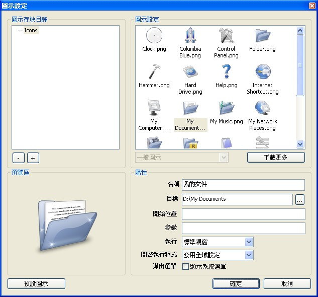

1. 新增項目
裝完 RocketDock 之後，人們最想做的第一件事就是新增一些項目上去，你可以透過以下 這幾種方式達成：
你幾乎可以從任何地方把你想新增的項目拖拉到 RocketDock； 你的桌面、檔案總管、工作列、或是「開始」功能表都可以。
另一個方法是在 RocketDock 按下右鍵並選擇「新增項目」。

這裡有一些選項可以修改，底下將會一一介紹：
- 檔案：你可以選擇加入任何型態的檔案到 RocketDock，當你按下之後它就會被預設程式開啟。
- 資料夾：你可以新增任何資料夾到 RocketDock，按下之後這個資料夾就會被開啟。
- 空白圖示：這個選項將會新增一個沒有圖示的項目，按下之後將會彈出 RocketDock 的圖示設定視窗，你可以在此設定一些屬性。當你想要新增一個既不是檔案也不是資料夾的項目的時候，這個功能就很有用，例如新增一個連結連到某個網頁。
- 分隔線：新增一個分隔線可以讓你方便整理這些圖示，或者有時候你就只是想要一個分隔線。
- 資源回收筒：這會新增一個資源回收筒的捷徑，他有「空」跟「滿」兩種狀態。
- 程式設定：這是一個特殊項目，若你將 RocketDock 上頭的「程式設定」圖示移除了，可以用這個項目把它加回來。
- 離開本程式：當你按下之後就會關閉 RocketDock。
2. Docklets
Docklets 有點像是小型的應用程式，它們只有單一功能並且在 RocketDock 底下運行。它們有多種變化，可以用來監測系統資訊（例如記憶體使用量），也可以用來監測資源回收筒，並且圖示會根據資源回收筒是空的還是滿的而變化。你可以直接將 docklets 放到：
C:\Program Files\RocketDock\Docklets (預設位置）
之後只要在 RocketDock 按下右鍵就會在「新增項目」的選單底下看到它們了。

備註：目前 RocketDock 只支援 ObjectDock 的 docklets。
3. 設定項目
你可以修改每個項目的外觀，只要對著圖示按右鍵，然後選擇「圖示設定」就可以了。

在這裡你會看到圖示設定的視窗，你可以修改一些圖示的屬性。
圖示存放目錄
在這裡你可以看到圖示存放目錄下的所有目錄，預設位置在：
C:\Program Files\RocketDock\Icons
你也可以自行新增圖示存放目錄，「+」跟「-」按鈕可以讓你新增跟移除圖示目錄。
圖示設定
當你選擇一個圖示目錄之後，所有可用的圖示將會顯示在這個區塊裡頭。在這區塊底下的下拉式選單（通常會顯示「一般圖示」，並呈現灰色無法選取的狀態）是給那些有不同圖示集的項目用的，最常見的用法就是給資源回收筒狀態為「空」跟「滿」的圖示使用。
預覽區
在這裡你可以看清楚自己選了哪個圖示。
屬性
在此你可以設定項目的標題、連結到哪裡、以及是否要顯示系統選單等等。
- 名稱：設定項目的標籤，當滑鼠經過圖示時就會顯示出來。
- 目標：這是項目的來源路徑。
- 開始位置：應用程式的工作目錄，一般而言可以不用設定它。
- 參數：呼叫應用程式時，要下達的參數。
- 執行：當程式被呼叫時，是否要最小化或最大化視窗。
- 開啟執行程式：這可以讓你針對每個圖示，設定「開啟正在執行中的程式」的行為。你有三種選擇：「套用全域設定」，「總是」，「絕不」。
- 彈出選單：當你對圖示按右鍵時，是否要顯示系統選單。例如你可以新增一個「資源回收筒」的捷徑到 RocketDock 並且勾選「顯示系統選單」。

4. 移除項目
有兩種方法可以移除項目。第一種方法很簡單，只要將圖示拖拉到桌面即可。 第二種方法是對圖示按右鍵，然後選擇「移除項目」。

你也可以用同樣的方法移除分隔線，不過 docklets 只能透過拖拉的方式移除。
5. 輕鬆拖拉
你可以拖拉檔案或資料夾到 RocketDock。
若你拖拉一個檔案或資料夾到某個圖示上，這個圖示項目將會被啟動，並且會載入這個檔案或資料夾（如果該項目支援這個動作的話）。例如你拖拉一張 PNG 圖檔到 Photoshop 的捷徑上，則 PhotoShop 會被啟動並載入這張圖檔。
若你拖拉一個檔案或資料夾到某個目錄上，它將會被複製到這個目錄底下。每個項目的工作方式 就跟你桌面上那堆捷徑或目錄一樣。
若你拖拉一個檔案或資料夾到「資源回收筒」的項目上，那它就會被刪除。
6. 最小化的視窗
若你在程式設定裡頭勾選了「視窗縮小到 RocketDock 工具列」，最小化的視窗就會變成一個圖示並縮到 RocketDock 工具列上。這些圖示當然也可以拖拉，不過無法拉到桌面刪除。在 Windows Vista 底下若你有 啟動「Desktop Composition」的功能的話，這圖示將可以即時顯示視窗的內容。
你可以對視窗圖示按下右鍵並選擇「開啟視窗」或「關閉視窗」來開啟或關閉它，或是對著圖示按一下也可以馬上開啟視窗。

你可以按住「Control」鍵再縮小視窗，這樣視窗就不會縮小到 RocketDock 工具列，而是會依照它們原本預設的行為縮小到工作列或系統匣。